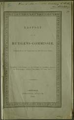
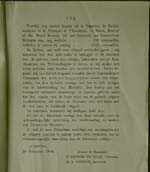
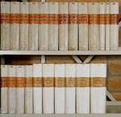
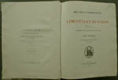
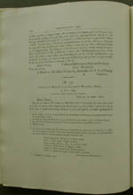
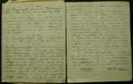

Christiaan Huygens. Facetten van een genie
De manuscripten
8 april 31 mei 2004
Tentoonstelling in de Universiteitsbibliotheek Leiden
9. Oeuvres complètes de Christiaan Huygens (1888-1950)
De Koninklijke Nederlandsche Akademie van Wetenschappen nam in 1882 het initiatief tot oprichting van een papieren monument voor Christiaan Huygens. Zij stelde een commissie in die een verzameld werk-editie moest voorbereiden en wetenschappelijk begeleiden. De Huygens-commissie begon met monnikenwerk dat meer dan zestig jaar zou duren: inventariseren van alle brieven van en aan Huygens, van alle onuitgegeven teksten en tekeningen met enig wetenschappelijk belang, van alle publicaties (vele ontbreken in de Opera varia en Opera reliqua); ordenen, afschrijven en collationeren van de manuscripten; vervaardigen van toelichtingen (in het Frans) etc. Onder auspiciën van de Hollandsche Maatschappij der Wetenschappen werden de 22 delen door Johan Enschedé en Zonen gedrukt op speciaal papier (met watermerk ‘Christiaan Huygens’!) en uitgegeven door Martinus Nijhoff.
|  | 9.1. Tweede en derde rapport van de
Huygens-commissie, uitgebracht in de vergadering van 29 november
1884 en 27 juni 1885, in: Verslagen en mededeelingen der
Koninklijke Akademie van Wetenschappen, Afdeeling Natuurkunde,
3de Reeks, deel I en II. [HUG 51, 14-15] –– De commissie brengt verslag uit aan van haar wetenschappelijke arbeid en van haar pogingen om de uitgave zelf elders onder te brengen.
|
|  | |
|  | 9.2. Oeuvres complètes de
Christiaan Huygens. Publ. par la Société Hollandaise des
Sciences. La Haye 1888-1950. 22 dl. [1049 A 1, B5] –– Getoond zijn het eerste en laatste deel. 1 (1888)Correspondance 1638-1656. 2 (1889)Correspondance 1657-1659. 3 (1890)Correspondance 1660-1661. 4 (1891)Correspondance 1662-1663. 5 (1893)Correspondance 1664-1665. 6 (1895)Correspondance 1666-1669. 7 (1897)Correspondance 1670-1675. 8 (1899)Correspondance 1685-1690. 9 (1901)Correspondance 1685-1690. 10 (1905)Correspondance 1691-1695. 11 (1908)Travaux mathématiques 1645-1651. 12 (1910)Travaux de mathématiques pures 1652-1656. 13 (1916)Dioptrique : 1653, 1666, 1685-1692. 14 (1920)Calcul des probabilités; Travaux de mathématiques pures,1655-1666. 15 (1925)Observations astronomiques; Système de saturne; Travaux astronomiques 1658-1666. 16 (1929)Percussion; Question de l'existence et de la perceptibilité du mouvement absolu; Force centrifuge; Travaux divers de statique et de dynamique de 1659 à 1666. 17 (1932)L'horloge à pendule de 1651 à 1666; Travaux |
|  | |
|  | |
|
divers de physique, de mécanique et de technique de 1650 à 1666;
Traité des couronnes et des parhélies (1662 ou 1663). 18 (1934)L'horloge à pendule ou à balancier de 1666 à 1695; Anecdota. 19 (1937)Mécanique théorique et physique de 1666 à 1695; Huygens à l'Académie royale des sciences. 20 (1940)Musique et mathématique; Musique; Mathématiques de 1666 à 1695. 21 (1944)Cosmologie. 22 (1950)Supplément à la correspondance; Varia; Biographie de Chr. Huygens; Catalogue de la vente des livres de Chr. Huygens. Verantwoordelijke redacteurs: D. Bierens de Haan (1-5), J. Bosscha (6-10), D.J. Korteweg (11-15), A.A. Nijland (15), J.A. Vollgraf (16-22). |
|
|  | 9.3. W.N. du Rieu, S. de Vries, F.C. Wieder,
Dagelijkse aantekeningen betreffende de bibliotheek, 1879-1936.
[BA1 H 9] –– Sinds 1885 zijn de Huygenspapieren gedurende vele jaren aan de Huygens-commissie uitgeleend geweest. Het intensieve gebruik ten behoeve van het editieproject heeft de nodige sporen nagelaten in het materiaal. Met potlood voorzagen de redacteurs vele zeventiende-eeuwse bladen van verwijzingen en notities, en omcirkelden ze te reproduceren tekeningen. Tot overmaat van ramp werden uit de losse papieren nieuwe thematische bundels samengesteld, waardoor de oorspronkelijke ordening verloren ging. Toen de manuscripten in december 1927 geretourneerd werden, kwamen deze verstoringen aan het licht. Bibliothecaris F.C. Wieder was onaangenaam verrast, blijkens zijn memorandum van 23 januari 1928. |
| vorige pagina | volgende pagina |